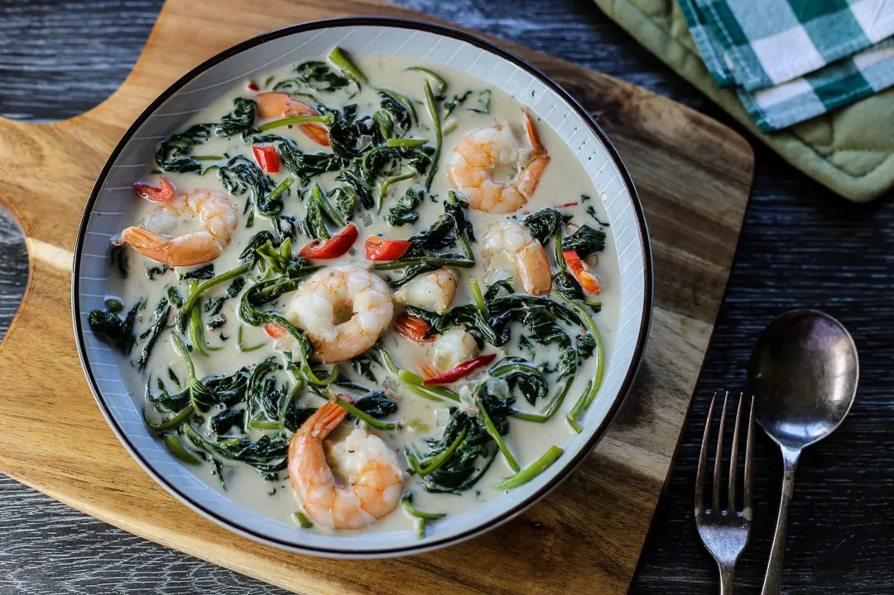

Ginataang Kangkong
—Recipe—

Ingredients
- 1 large bunch kangkong, trimmed
- 250 g shelled prawns
- 400 g can coconut milk
- 200 g can coconut cream
- 3 pcs long red chillies, sliced
- 6 cloves garlic, minced
- 1 onion, sliced
- Freshly ground black pepper
- Fish sauce
- Oil
Procedure
- In a wok add oil then sauté garlic and onions.
- Add coconut milk then bring to a boil, simmer in medium heat for 10 minutes or until sauce slightly thickens.
- Add kangkong, chillies, prawns and coconut cream, simmer for 5 more minutes.
- Season with fish sauce and freshly ground black pepper to taste then serve.